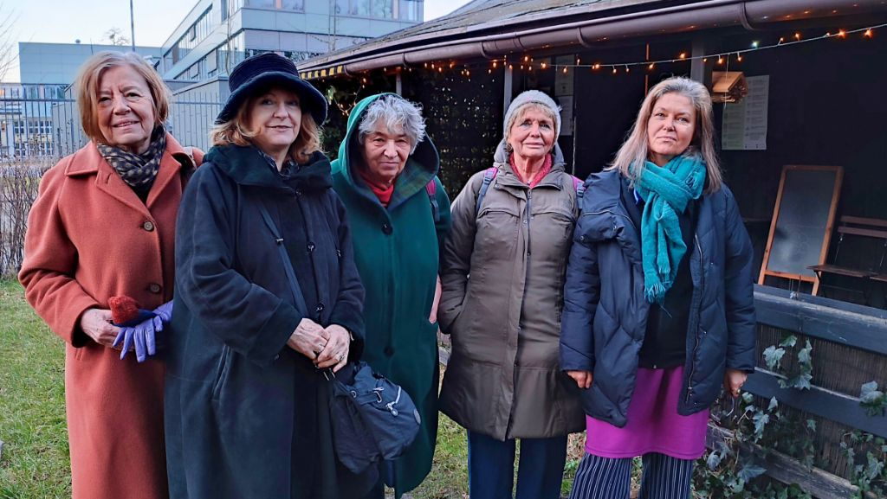
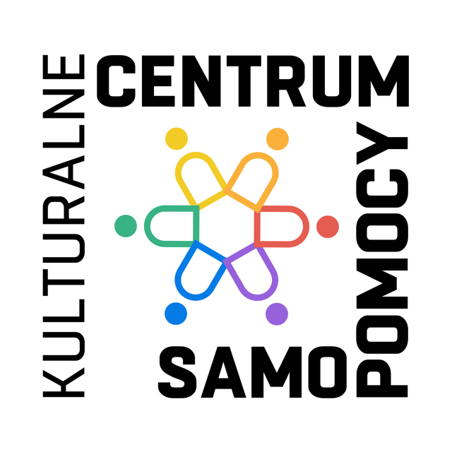
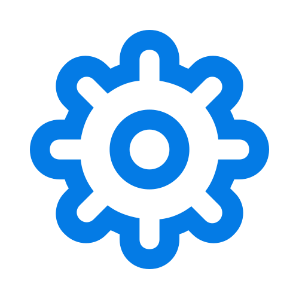
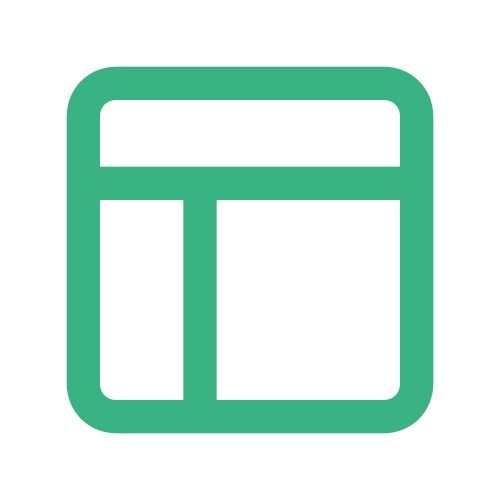
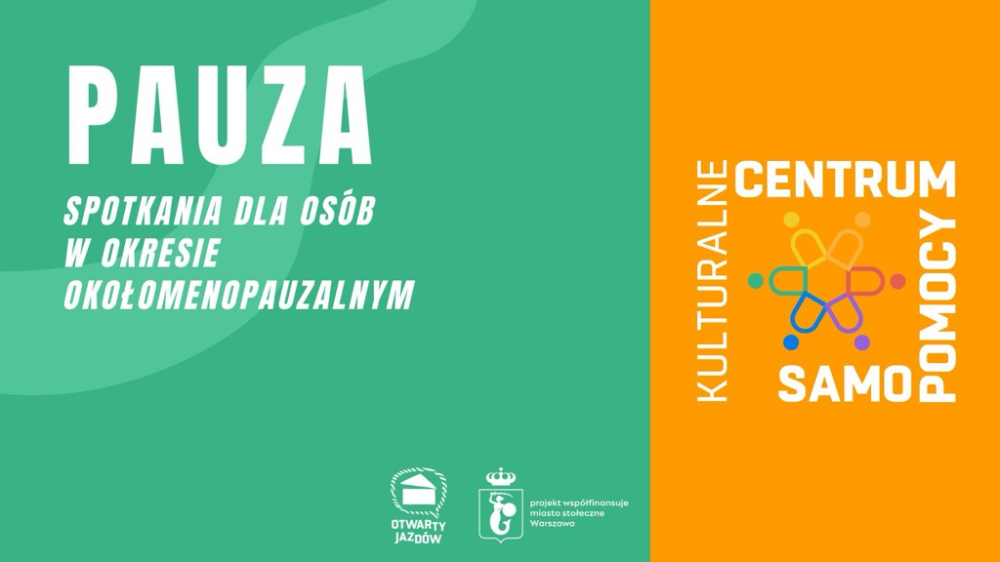
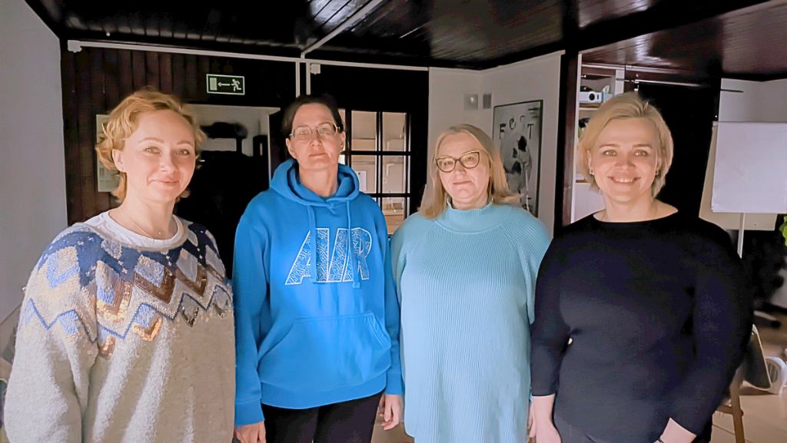
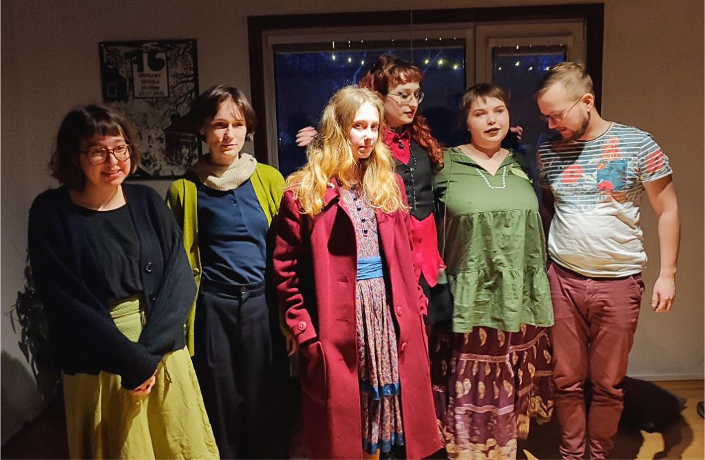
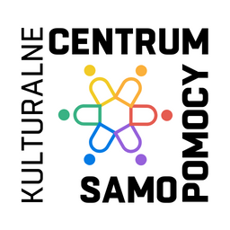
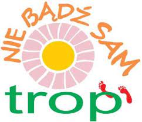

GRUPA STARSZYZNY PLEMIENNEJ „JAZNÓW”
Grupa osób 55+, spotykająca się w Otwartym Jazdowie, aby wzajemnie rozwijać się, oswajać starość i realizować wspólne projekty kulturalne.
więcej
przez wspólnotę doświadczeń do wspólnoty w kulturze

Wspieramy powstawanie nowych grup poprzez pomoc w ustalaniu oczekiwań, celów, zasad oraz podziału ról uczestników grup samopomocowych oraz oferujemy superwizje dla liderek i liderów grup.

Zapewniamy bezpłatne, komfortowe i bezpieczne przestrzenie do spotkań dla nowych oraz już działających grup samopomocowych, czy kręgów wsparcia.
Zachęcamy do aktywnego życia kulturalnego poprzez korzystanie z istniejących programów lub inicjowanie własnych projektów kulturalnych.
Współpracujemy z zainteresowanymi zespołami instytucji kultury (np. domy kultury, biblioteki, galerie, miejsca aktywności lokalnej) i pomagamy założyć własną Wzajemnię.
poznaj grupy, które powstały i które wspieramy ramach naszego modelu samopomocy

Grupa osób 55+, spotykająca się w Otwartym Jazdowie, aby wzajemnie rozwijać się, oswajać starość i realizować wspólne projekty kulturalne.
więcej
Najważniejsze dla nas jest regularne spotykanie się, którego celem jest wyzwalanie pozytywnej energii, wgląd we własne uczucia i praca nad spełnianiem marzeń, które długo leżały zapomniane.
więcej
Otwarta grupa wsparcia dla osób uchodzących przed wojną w Ukrainie. Grupa służy głównie możliwościom spotkania i dzielenia się wspólnymi trudnymi doświadczeniami. Prowadzona przez psycholożkę - uchodźczynię.
więcej
Młode osoby spotykające się na Jazdowie, aby wzajemnie służyć sobie wsparciem w codzienności, wygadać się i dzielić doświadczeniami oraz wspólnie organizować wyjścia i korzystać z warsztatów i wydarzeń kulturalnych
więcej
Grupa samopomocowa dla kobiet przybyłych do Polski z obszarów dotkniętych konfliktem lub prześladowaniami. Zainicjowana na Jazdowie przez Fundację „Ocalenie”
więcej
Grupa Wsparcia TROP jest nieformalną organizacją utworzoną przez osoby z doświadczeniem kryzysu psychicznego. Grupa działa na rzecz własnych członków jak również wspierająco i rzeczniczo na rzecz osób w trakcie lub po kryzysach psychicznych.
więcejChcesz założyć nową grupę? Masz pomysł na działanie z nami?
Napisz do nas!